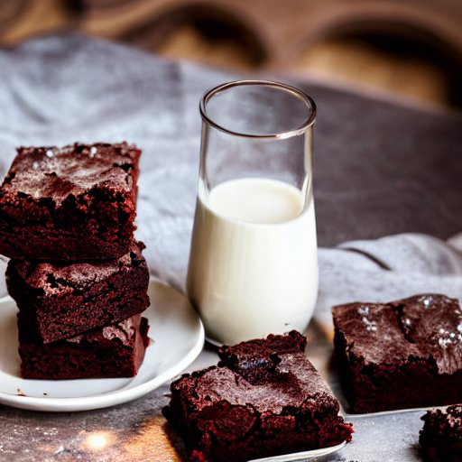

Trotter's Brownies

This fudgy brownie recipe was given to me by a friend on a handwritten index card dusted with cocoa powder and smudges of brownie batter, so that's how you know it's a good one. Just when you thought it couldn't get any better, it comes with directions for easy and mega satisfying chocolate frosting - optional, but not really. Pour yourself a big, cold glass of milk for the ultimate sweet tooth experience.
Ingredients
Brownies
- 1 cup shortening, OR 1/2 cup butter and 1/2 cup oil
- 2 cups sugar
- 4 eggs
- 8 tablespoons unsweetened cocoa (dutch processed)
- 2 cups flour
- 2 teaspoons vanilla
Chocolate Lover's Frosting
Makes 2-3 cups of frosting.
- 3 cups powdered sugar
- 1/2 cup cocoa
- 1 stick (1/2 cup) butter, softened
- 5 to 6 tablespoons milk (depends on humidity)
- 1 teaspoon vanilla
Tools
- 11" x 16" jelly roll pan, grease and flour the bottom only
- double boiler, microwave, or medium heatsafe glass bowl placed on top of a pot. Fill the pot with water, leaving 1" of space between the water and the bottom of the bowl. Bring the water to a gentle boil for step 2.
- large mixing bowl
- medium mixing bowl
- small mixing bowl (if making frosting)
- silicone spatula
- metal spatula for frosting
Brownie Directions
- Preheat the oven to 350F.
- Melt the chocolate and shortening (or substitute) together on low-medium heat.
- Sift or thoroughly mix the dry ingredients in a large bowl.
- Mix the wet ingredients in a separate bowl, mixing well or on high speed for 1 minute.
- Add the wet ingredients to the flour mix and fold until just combined. Don't over mix.
- Spread on a prepared jelly roll pan and bake for 15 minutes.
Hint: Be sure to pull the brownies out of the oven after time is up. They might not seem done, but let them rest on the counter for 10 minutes for perfect fudginess.
If you prefer brownies that are more cake-like, use an extra egg and 1/4 cup of flour in the mix.
Frosting Directions
- Combine ingredients and mix until smooth.
- Frost brownies when HOT